| Asignatura | Taller de Ingeniería de Software (Ingeniería de Software II, 2026) |
| Integrantes | Paulo Araya Sebastián Bonilla Martín Droguett Damián Valdivia |
| Profesor | Daniel San Martín |
| Ayudante | Martín Castillo |
| Fecha | 16 de noviembre de 2026 |
| Repositorio | github.com/MotelPaso/sigu_ucn, rama grupo-8 |
Este documento corresponde al segundo entregable del Grupo 8 en el taller. Nuestro módulo es el sistema de gestión de tutorías académicas dentro de SIGU-UCN, la plataforma universitaria compartida por los nueve grupos.
En el Entregable 1 definimos el problema, los requisitos y un primer modelado. En esta etapa corregimos ese documento, diseñamos el módulo en detalle y lo implementamos de forma parcial sobre la base común del curso: Java, Javalin, JTE, JPA/Hibernate y PostgreSQL en Docker. Quedaron operativas las ocho funcionalidades que el backlog del Entregable 1 asignó al E2. Asistencia y cancelaciones quedan para el Entregable 3.
Al revisar el Entregable 1 contra el enunciado y contra lo que construimos, encontramos inconsistencias y requisitos faltantes. La siguiente tabla resume las correcciones y el resto de la sección presenta la versión ya corregida.
| Elemento | Problema detectado | Corrección |
|---|---|---|
| RF1 (registrar tutores) | Decía que el tutor se registra solo, pero los actores indicaban que lo habilita el administrador. | El administrador habilita a un estudiante existente como tutor y certifica al menos una asignatura. |
| RF2 y HU-02 (registro) | Suponía un registro institucional previo y no decía qué datos se piden. | El estudiante se registra con correo @alumnos.ucn.cl, nombre, carrera, semestre y una contraseña de al menos 8 caracteres. |
| HU-01 (iniciar sesión) | Pedía elegir rol al entrar. Como el tutor es un estudiante con un perfil adicional, no hay roles en conflicto. | Al iniciar sesión el sistema detecta si el usuario tiene perfil de tutor y muestra las opciones que corresponden. |
| RF5 (reservar) | Hablaba de la "capacidad de la sala", pero las tutorías en línea no tienen sala. | Se controla el cupo propio de cada tutoría, en ambas modalidades. |
| RF10 (buscar) | Mezclaba "filtrar" con "ordenar". | Se filtra por tutor, asignatura y fecha, y los resultados se muestran en orden cronológico. |
| Historial (enunciado, RF9) | El enunciado pide "listar historial" y el E1 no lo incluía. | Se agrega como RF11 y queda planificado para el E3. |
| Reglas del enunciado | Faltaban "una franja horaria solo puede reservarse una vez" y "solo pueden reservarse tutorías disponibles". | Se agregan como RN9 y RN10. |
| Caso de uso "Cancelar tutoría" | Decía que el sistema avisa a los inscritos, pero las notificaciones están fuera del alcance. | La cancelación y su motivo aparecen en la agenda de cada inscrito, sin mensajería. |
| Caso de uso "Registrar asistencia" | La precondición exigía que alguien hubiera asistido, lo que choca con la extensión 3a. | La precondición pasa a ser que la tutoría haya terminado. |
| Caso de uso "Gestionar asignaturas" | Solo impedía eliminar asignaturas con tutorías activas. | Tampoco se elimina una asignatura con tutorías en su historial, para no perder registros. |
| RN4 | Decía "22 PM". | Horario permitido entre las 07:00 y las 22:00. |
Las tutorías académicas son clases de ejercicios o repaso que dictan estudiantes de cursos superiores a estudiantes de niveles inferiores, y sirven de apoyo al aprendizaje. Hoy se organizan por canales informales, sin un registro común de oferta, cupos ni asistencia. El módulo reúne ese proceso en SIGU-UCN. Un tutor habilitado publica su disponibilidad, los estudiantes encuentran y reservan tutorías de las asignaturas que cursan, y ambos consultan su agenda.
Incluye la gestión del catálogo de asignaturas, la habilitación de tutores, la publicación de tutorías, la búsqueda con filtros, la reserva, la agenda, la cancelación de tutorías e inscripciones, el registro de asistencia y el historial. El Entregable 2 implementa las ocho primeras funcionalidades del backlog (sección 2.9). Quedan fuera las notificaciones, la evaluación de tutores y los pagos. El módulo tampoco accede a información privada de los estudiantes.
| ID | Requisito | Entrega |
|---|---|---|
| RF1 | El administrador puede habilitar a un estudiante registrado como tutor, certificando al menos una asignatura. | E2 |
| RF2 | Un estudiante puede registrarse con su correo institucional y una contraseña. | E2 |
| RF3 | Los usuarios inician sesión con sus credenciales y ven las opciones de su rol y perfil. | E2 |
| RF4 | Un tutor puede publicar una tutoría indicando asignatura, fecha, horario, modalidad, sala (si es presencial) y cupo. | E2 |
| RF5 | Un estudiante puede reservar una tutoría disponible, verificando que curse la asignatura, que haya cupo y que no tenga otra tutoría en ese horario. | E2 |
| RF6 | El tutor puede cancelar una tutoría que no ha comenzado, indicando el motivo. | E3 |
| RF7 | El estudiante puede cancelar su inscripción y registrar un motivo. | E3 |
| RF8 | Estudiantes y tutores pueden consultar su agenda ordenada por fecha y hora. | E2 |
| RF9 | El tutor puede registrar la asistencia de los inscritos una vez terminada la tutoría. | E3 |
| RF10 | El estudiante puede consultar las tutorías disponibles y filtrarlas por tutor, asignatura o fecha. | E2 |
| RF11 | Estudiantes y tutores pueden listar su historial de tutorías realizadas o canceladas. | E3 |
| RF12 | El administrador puede crear, editar y eliminar asignaturas, y asociarlas a tutores y tutorías. | E2 |
/tutorias.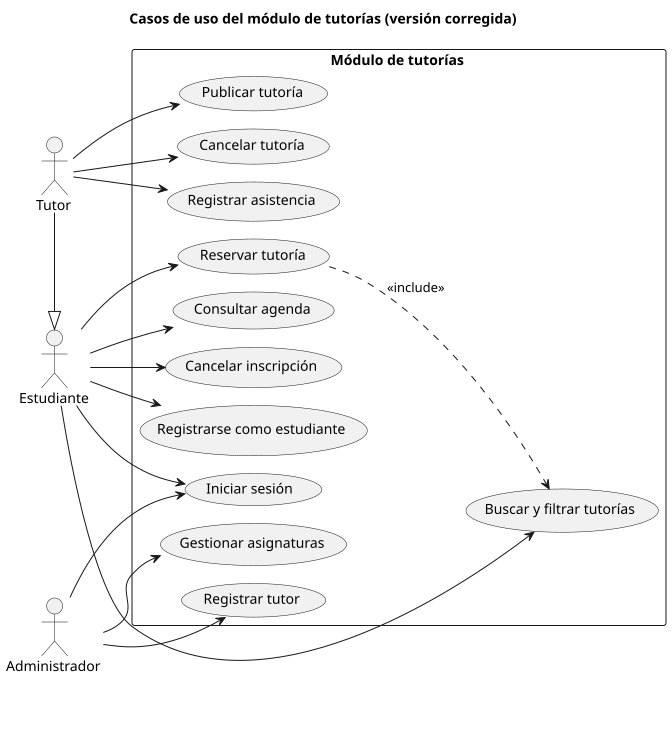
Los casos de uso del Entregable 1 se mantienen, con las correcciones de la sección 2.1. A continuación detallamos los dos que más cambiaron al implementarlos.
Publicar tutoría (actor: tutor; precondición: sesión iniciada y perfil de tutor certificado).
Extensiones: 4a, si hay datos inválidos, el sistema marca cada campo con su error y conserva lo ingresado. 4b, si la franja se cruza con otra tutoría del mismo tutor, rechaza la publicación.
Registrar asistencia (actor: tutor; precondición: la tutoría terminó). Se mantiene el flujo del E1, con la precondición corregida. Se implementará en el E3.
Las historias HU-01 a HU-08 se mantienen. HU-01 cambia su segundo criterio: "dado un usuario con perfil de tutor, al iniciar sesión el sistema le muestra además la opción de publicar tutorías". HU-02 cambia el suyo: "dado un correo institucional no registrado, al registrarse se crea su cuenta con rol de estudiante".
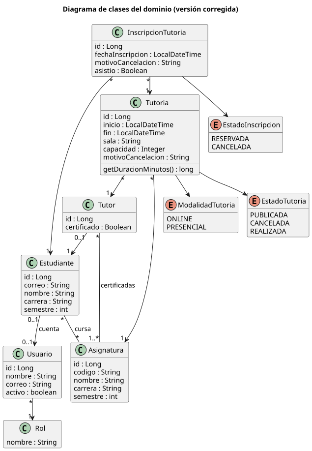
Respecto al E1, el diagrama separa Estudiante de Usuario. El estudiante es el registro académico del módulo y puede estar asociado a una cuenta. El tutor es un perfil sobre un estudiante. Los estados y la modalidad se modelan como enumeraciones.
| N° | Funcionalidad | Origen | Prioridad | Puntos | Entrega | Estado |
|---|---|---|---|---|---|---|
| 1 | Iniciar sesión | HU-01, RF3 | Alta | 3 | E2 | Hecho |
| 2 | Registrarse como estudiante | HU-02, RF2 | Alta | 3 | E2 | Hecho |
| 3 | Gestionar asignaturas | RF12 | Alta | 3 | E2 | Hecho |
| 4 | Registrar tutor | HU-08, RF1 | Alta | 3 | E2 | Hecho |
| 5 | Publicar tutoría | HU-05, RF4 | Alta | 5 | E2 | Hecho |
| 6 | Buscar tutorías disponibles | HU-03, RF10 | Alta | 3 | E2 | Hecho |
| 7 | Reservar tutoría | HU-04, RF5 | Alta | 8 | E2 | Hecho |
| 8 | Consultar agenda | RF8 | Alta | 2 | E2 | Hecho |
| 9 | Registrar asistencia | HU-06, RF9 | Alta | 5 | E3 | Pendiente |
| 10 | Cancelar tutoría | HU-07, RF6 | Media | 3 | E3 | Pendiente |
| 11 | Cancelar inscripción | RF7 | Media | 2 | E3 | Pendiente |
| 12 | Listar historial | RF11 | Media | 2 | E3 | Pendiente |
El módulo agrega siete tablas con prefijo tut_ mediante scripts aditivos en db/init/. No modifica las tablas base del sistema (01_scheme.sql y 02_seed.sql), así evita conflictos con los otros grupos.
80_tutorias_schema.sql: tablas, llaves, restricciones e índices.81_tutorias_seed.sql: datos de prueba (asignaturas, estudiantes, dos tutores y tutorías con fechas relativas al día de creación).82_tutorias_constraints.sql: índice único parcial que impide repetir la franja de un tutor.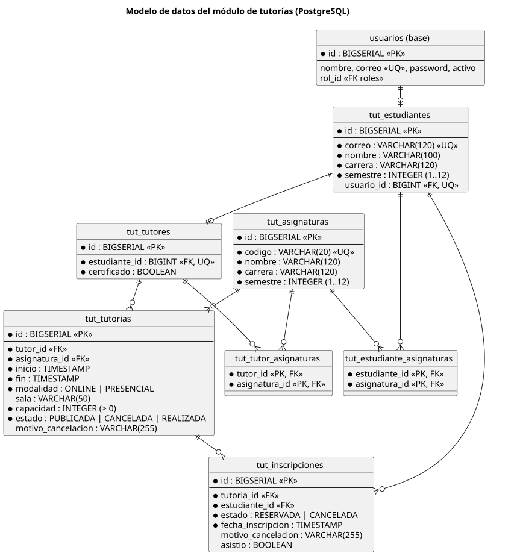
| Tabla | Propósito | Restricciones relevantes |
|---|---|---|
tut_asignaturas | Catálogo de asignaturas. | codigo único; semestre entre 1 y 12. |
tut_estudiantes | Registro académico del estudiante, enlazado opcionalmente a su cuenta en usuarios. | correo y usuario_id únicos. |
tut_estudiante_asignaturas | Asignaturas que cursa cada estudiante (RN2). | Llave primaria compuesta. |
tut_tutores | Perfil de tutor sobre un estudiante. | estudiante_id único: un perfil por estudiante. |
tut_tutor_asignaturas | Asignaturas certificadas del tutor (RN8). | Llave primaria compuesta. |
tut_tutorias | Tutorías publicadas. | CHECK de duración mínima, horario 07:00 a 22:00 dentro del mismo día, cupo mayor que 0, modalidad y estado válidos, y sala obligatoria si es presencial. Índice único parcial por tutor, inicio y fin para las publicadas (RN9). |
tut_inscripciones | Reservas de estudiantes. Incluye asistio y motivo_cancelacion para el E3. | Índice único parcial (tutoria_id, estudiante_id) solo para reservas activas. |
El plan inicial consideraba una tabla asistencias aparte. Como cada asistencia corresponde a una sola inscripción, la guardamos en la columna asistio de tut_inscripciones, que queda en NULL mientras no se registre la asistencia. Los índices únicos son parciales para que una tutoría cancelada no bloquee otra en la misma franja y una reserva cancelada no impida volver a reservar. Las reglas que dependen de varias filas (cupo, choque de horario, que el estudiante curse la asignatura) se validan en la capa de servicio dentro de una transacción.
Cada tabla tiene su entidad en cl.ucn.app.model (Asignatura, Estudiante, Tutor, Tutoria, InscripcionTutoria), registrada en persistence.xml. Las relaciones usan @ManyToOne, @OneToOne y @ManyToMany con carga diferida, y los repositorios traen las asociaciones necesarias con JOIN FETCH.
El módulo sigue la arquitectura de tres capas del proyecto base. Una petición recorre ruta, controlador, servicio, repositorio y base de datos.
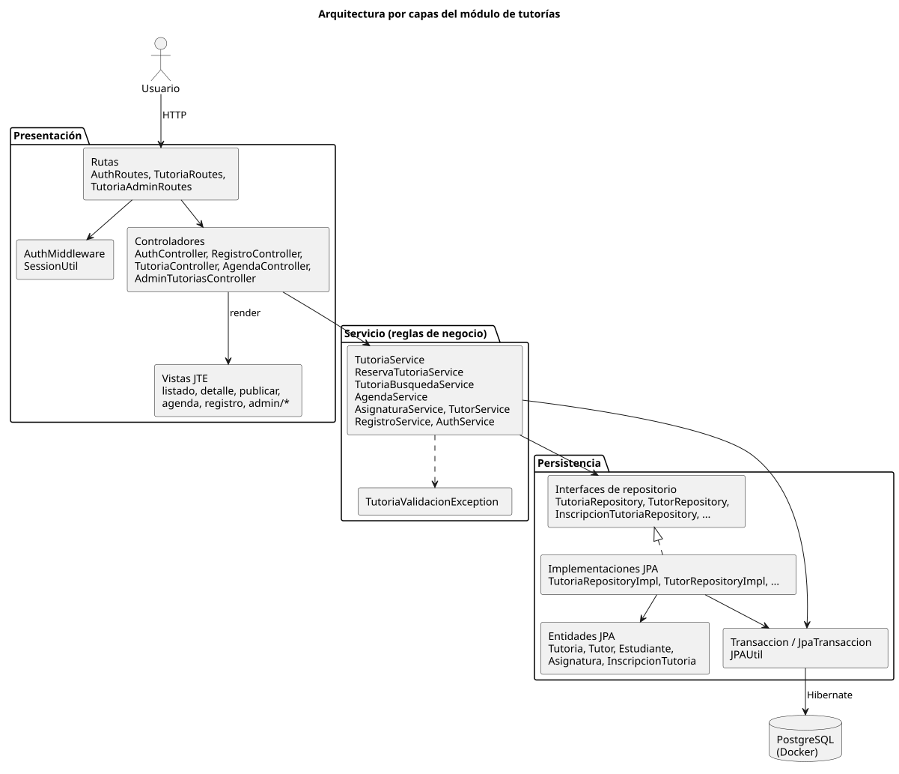
TutoriaRoutes, TutoriaAdminRoutes y AuthRoutes registran los endpoints. AuthMiddleware protege las rutas, de modo que sin sesión redirige a /login y sin el rol o perfil necesario responde 403. Los controladores leen la petición, delegan en un servicio y eligen la vista JTE. No contienen reglas de negocio.TutoriaService publica, ReservaTutoriaService reserva, TutoriaBusquedaService filtra, AgendaService arma la agenda, AsignaturaService y TutorService atienden la administración y RegistroService el registro. Los errores de negocio se informan con TutoriaValidacionException, que puede llevar un mapa de errores por campo.TutoriaRepository, TutorRepository, InscripcionTutoriaRepository y otras), no de sus implementaciones JPA. Eso permite reemplazarlas por dobles en las pruebas unitarias.Los repositorios del proyecto base abren y cierran un EntityManager por método. Eso no alcanza para reservar, porque validar el cupo, revisar choques e insertar la inscripción deben ocurrir en una misma transacción. Por eso agregamos la interfaz Transaccion y su implementación JpaTransaccion, que abre la transacción, ejecuta la operación, confirma o revierte ante cualquier excepción y siempre cierra el EntityManager. Dentro de ella, la reserva bloquea la fila de la tutoría (SELECT ... FOR UPDATE) y la publicación bloquea el perfil del tutor. Así dos peticiones simultáneas no pueden ocupar el último cupo ni la misma franja.
Los diagramas usan los nombres reales de clases, métodos y rutas. Las fuentes PlantUML están en docs/diagramas/.
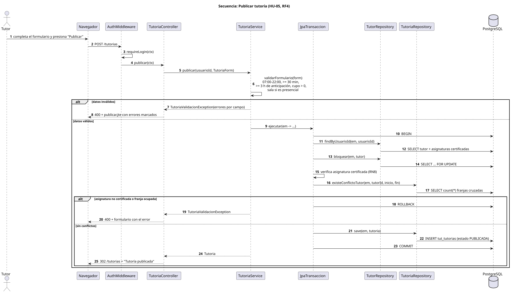
Publicar tiene dos niveles de validación. Primero se revisa el formulario completo y se informan todos los errores a la vez, sin tocar la base de datos. Después, dentro de la transacción, se comprueba el perfil de tutor, la certificación de la asignatura y el cruce de franjas. Si el índice único de la base se dispara en una carrera, el servicio lo traduce al mismo mensaje de negocio.
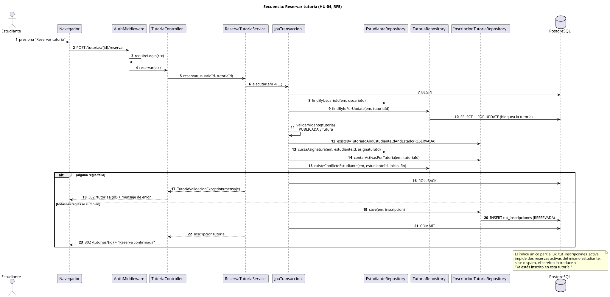
Reservar es el flujo principal del módulo. Todas las comprobaciones y la inserción ocurren en una sola transacción con la tutoría bloqueada, de modo que una reserva rechazada no deja ninguna inscripción parcial.
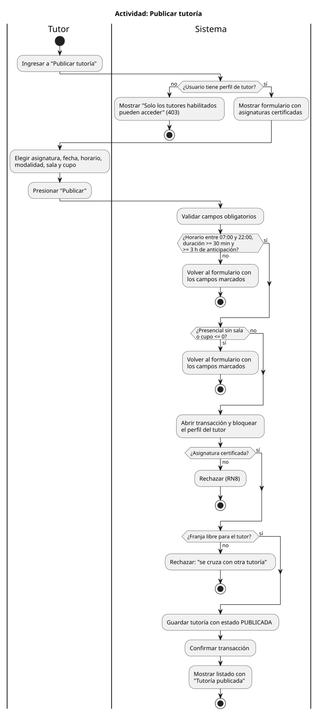
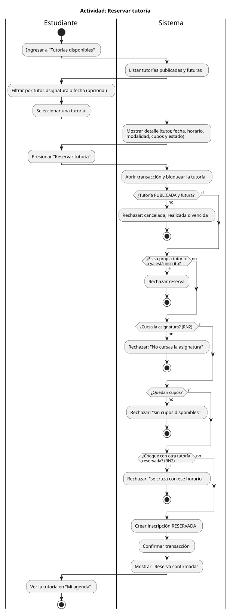
| Método y ruta | Acceso | Funcionalidad |
|---|---|---|
GET/POST /login, GET /logout | Público | Iniciar y cerrar sesión; guarda rol y perfil de tutor en la sesión. |
GET/POST /registro | Público | Registro de estudiantes. |
GET /tutorias | Sesión | Listado de tutorías disponibles con filtros. |
GET /tutorias/{id} | Sesión | Detalle de una tutoría, con cupos y estado. |
POST /tutorias/{id}/reservar | Sesión | Reservar tutoría. |
GET /tutorias/agenda | Sesión | Agenda del estudiante y, si es tutor, sus tutorías publicadas. |
GET /tutorias/publicar, POST /tutorias | Tutor | Formulario y publicación de tutorías. |
/tutorias/admin/asignaturas[...] | Administrador | Listar, crear, editar y eliminar asignaturas. |
/tutorias/admin/tutores[...] | Administrador | Listar y registrar tutores con sus asignaturas certificadas. |
| Funcionalidad | Validaciones |
|---|---|
| Registro | Nombre y carrera obligatorios; correo con formato @alumnos.ucn.cl y no registrado; contraseña de 8 caracteres o más y confirmación igual; semestre entre 1 y 12. Siempre asigna el rol ESTUDIANTE. |
| Asignaturas | Código, nombre y carrera obligatorios; código único (normalizado en mayúsculas); semestre entre 1 y 12; no se elimina si tiene tutorías activas o en su historial. |
| Registrar tutor | El correo debe pertenecer a un estudiante registrado con cuenta; no puede ser ya tutor; al menos una asignatura certificada y todas existentes. |
| Publicar | Campos obligatorios; horario entre 07:00 y 22:00; término posterior al inicio; duración mínima de 30 minutos; inicio futuro y con 3 horas de anticipación; cupo mayor que 0; sala obligatoria si es presencial; asignatura certificada; franja libre para el tutor. |
| Reservar | Tutoría existente, PUBLICADA y futura; no es la propia tutoría del tutor; sin reserva activa previa; el estudiante cursa la asignatura; quedan cupos; sin choque con otra reserva. |
Las reglas de negocio lanzan TutoriaValidacionException. Los controladores la capturan y responden según el caso:
Los formularios conservan lo ingresado tras un error. En ninguno de los casos probados la interfaz muestra trazas de Java (sección 9).
Las pruebas unitarias aíslan los servicios de la base de datos. Unas usan Mockito y otras, dobles en memoria (FakesTutorias) que implementan las mismas interfaces de repositorio. Se ejecutan con mvn test.
| Clase de prueba | Pruebas | Qué verifica |
|---|---|---|
TutoriaServicePublicarTest | 19 | Horario 07:00 a 22:00 y sus bordes, duración mínima, 3 horas de anticipación, fecha pasada, asignatura no certificada, franja cruzada, sala y cupo, usuario sin perfil y traducción del índice único. |
ReservaTutoriaServiceTest | 13 | Reserva exitosa, último cupo, sin cupo, asignatura no cursada, choque de horario, tutoría cancelada, realizada o vencida, duplicado, propia tutoría e inexistente. |
AsignaturaServiceTest | 12 | Código único, campos obligatorios, semestres inválidos y reglas de eliminación. |
TutorServiceTest | 6 | Al menos una asignatura, estudiante inexistente o sin cuenta, tutor duplicado. |
RegistroServiceTest | 3 | Correo duplicado, contraseña débil y registro con rol ESTUDIANTE. |
TutoriaBusquedaServiceTest | 2 | Cálculo de cupos y envío de filtros al repositorio. |
AgendaServiceTest | 2 | Cada usuario consulta solo su propia agenda. |
| Total | 57 | 57 aprobadas, 0 fallidas. |
[INFO] Tests run: 57, Failures: 0, Errors: 0, Skipped: 0 [INFO] BUILD SUCCESS
TutoriasIntegrationTest se ejecuta contra la base PostgreSQL de Docker. Está etiquetada con @Tag("integration"), así mvn test no depende de la base. Se ejecuta con mvn test -Pintegration. Cada prueba crea sus propios datos y los elimina al terminar.
| Prueba | Qué verifica |
|---|---|
persisteAsignaturaTutorYTutoriaYLaRecuperaConFiltros | Persistencia y recuperación con filtros de búsqueda. |
noPermitePublicarDosTutoriasEnLaMismaFranja | El índice único parcial rechaza una franja repetida. |
reservaYVerificaCupoEInscripcionEnLaBase | La reserva crea la inscripción y descuenta el cupo en la base. |
rechazaUnaReservaDuplicadaPorRestriccionUnica | La restricción única impide una segunda reserva activa. |
[INFO] Tests run: 4, Failures: 0, Errors: 0, Skipped: 0 [INFO] BUILD SUCCESS
Las capturas se tomaron sobre la aplicación en ejecución, con PostgreSQL en Docker y los datos del seed. Los archivos originales están en docs/evidencias/.
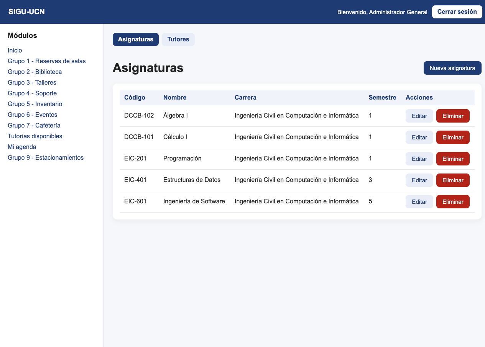
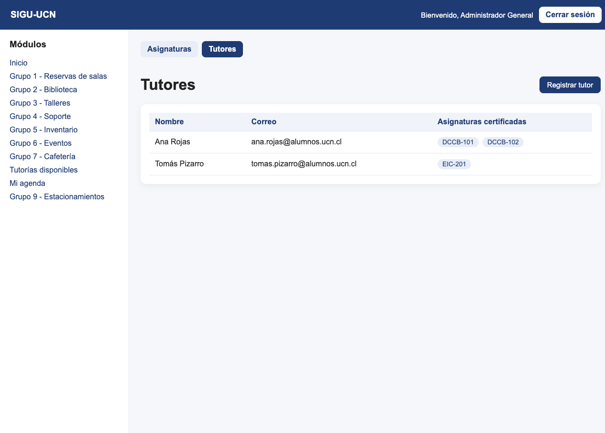
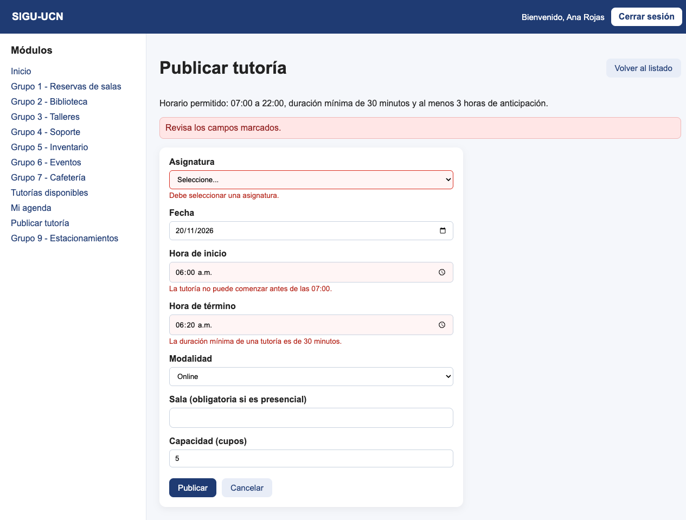
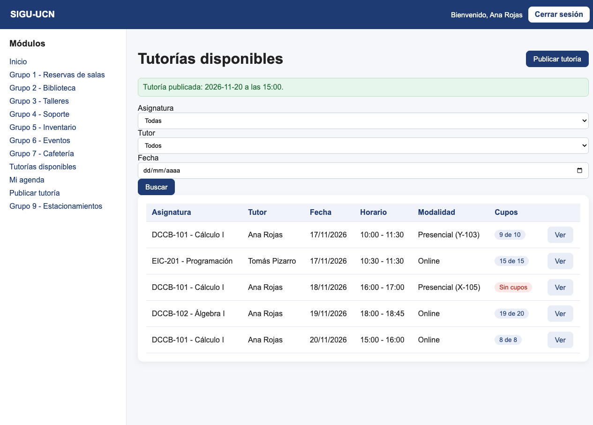
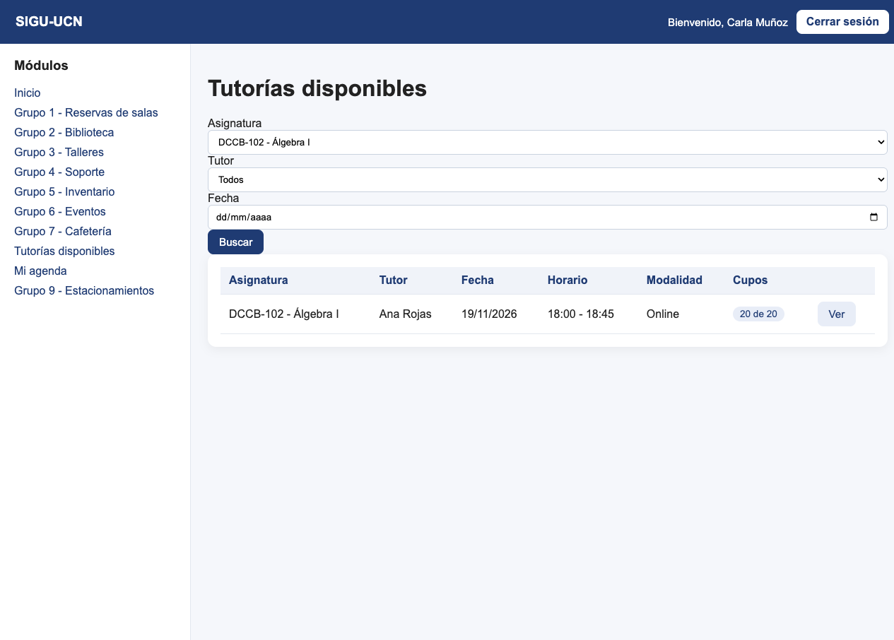
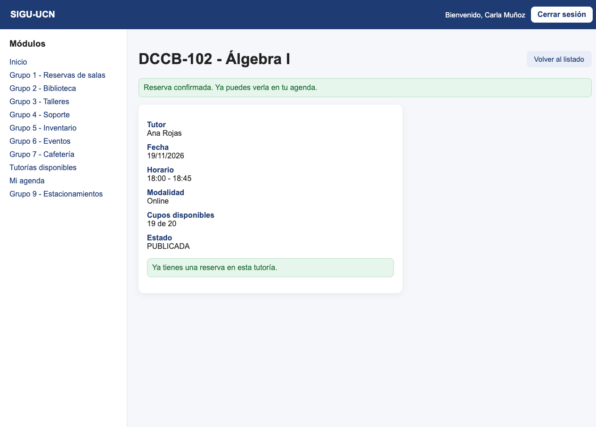
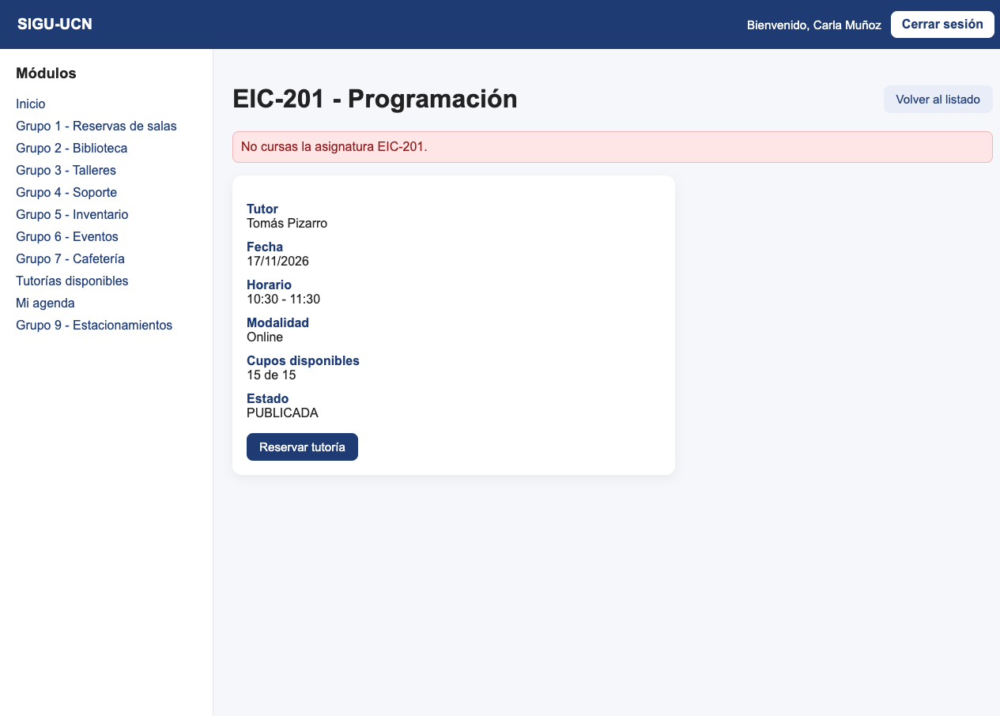
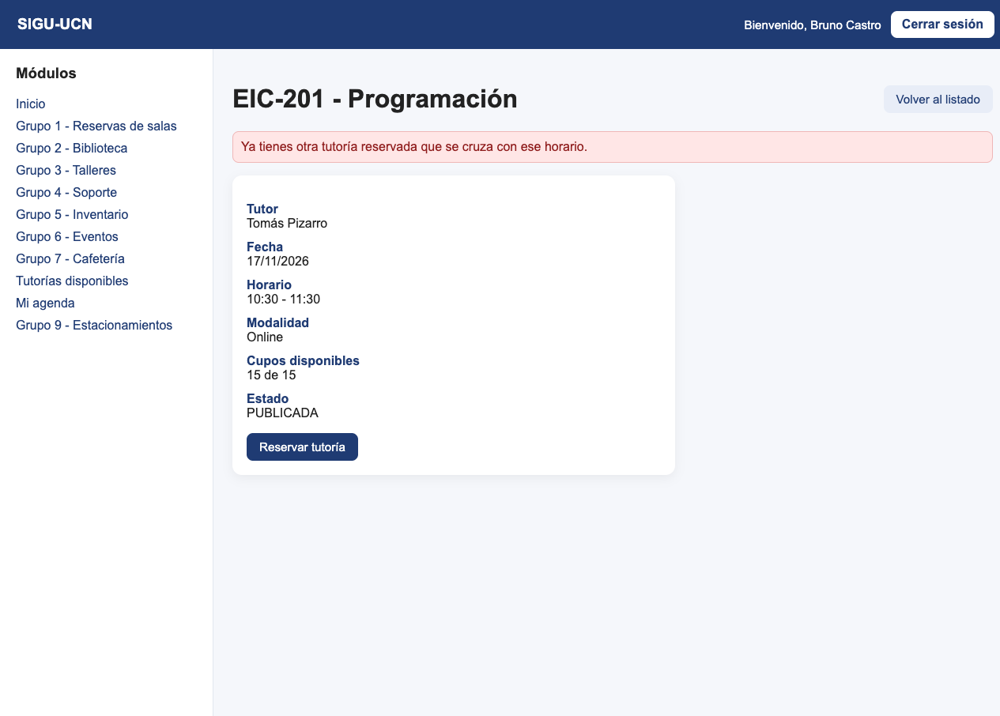
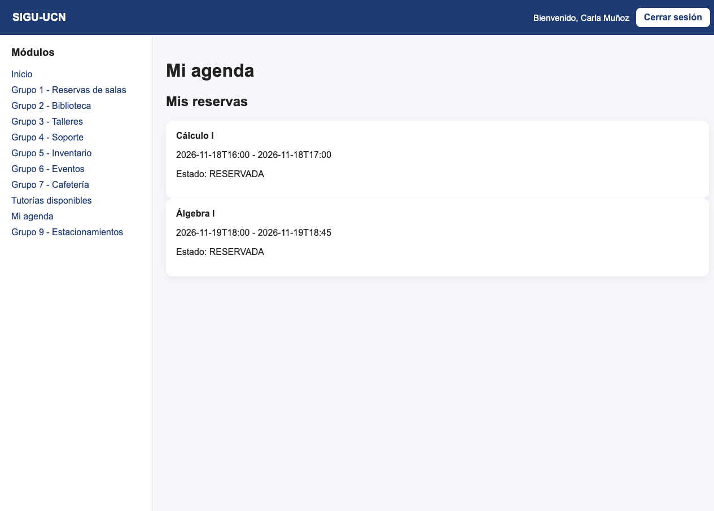
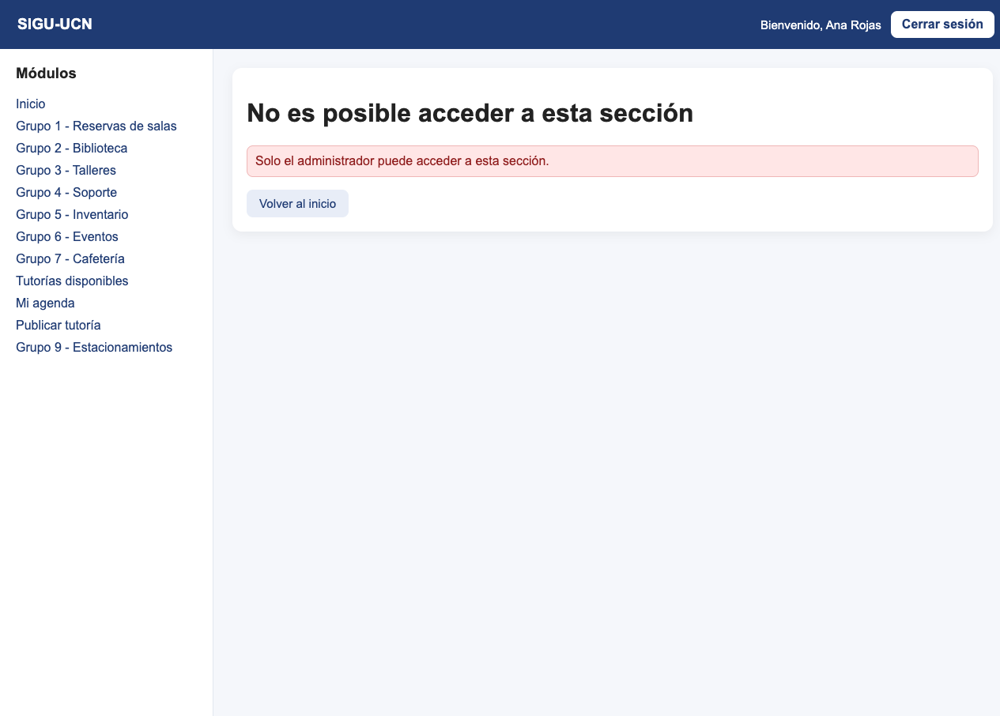
| Requisito | Caso de uso / HU | Clases | Endpoint | Pruebas |
|---|---|---|---|---|
| RF3, RNF1, RN3 | Iniciar sesión / HU-01 | AuthController, AuthService, AuthMiddleware | POST /login | Verificación manual (figuras 9 y 18) |
| RF2, RN3 | Registrarse / HU-02 | RegistroController, RegistroService | POST /registro | RegistroServiceTest (3) |
| RF12 | Gestionar asignaturas | AdminTutoriasController, AsignaturaService | /tutorias/admin/asignaturas | AsignaturaServiceTest (12) |
| RF1, RN8 | Registrar tutor / HU-08 | AdminTutoriasController, TutorService | POST /tutorias/admin/tutores | TutorServiceTest (6) |
| RF4, RN4, RN5, RN8, RN9 | Publicar / HU-05 | TutoriaController, TutoriaService, JpaTransaccion | POST /tutorias | TutoriaServicePublicarTest (19); integración: franja repetida |
| RF10 | Buscar / HU-03 | TutoriaController, TutoriaBusquedaService, TutoriaRepository | GET /tutorias | TutoriaBusquedaServiceTest (2); integración: filtros |
| RF5, RN1, RN2, RN10 | Reservar / HU-04 | TutoriaController, ReservaTutoriaService, JpaTransaccion | POST /tutorias/{id}/reservar | ReservaTutoriaServiceTest (13); integración: cupo y duplicado |
| RF8 | Consultar agenda | AgendaController, AgendaService | GET /tutorias/agenda | AgendaServiceTest (2) |
| RF6, RF7, RF9, RF11 | Cancelar, asistencia, historial / HU-06, HU-07 | Planificado para el Entregable 3. El esquema ya incluye motivo_cancelacion y asistio. | ||
EntityManager por método, no permitía validar e insertar de forma atómica. Lo resolvimos con Transaccion/JpaTransaccion y bloqueos de fila.grupo-8, acordamos antes los nombres de las rutas y los atributos de cada vista.tut_* creadas por scripts aditivos.PORT para elegir otro sin tocar el código.mvn test funcione sin base de datos.El módulo ya permite recorrer el flujo principal completo. El administrador crea asignaturas y habilita tutores, el tutor publica, el estudiante busca y reserva, y ambos ven la tutoría en su agenda. Las reglas de negocio que corresponden a estas funcionalidades (RN1 a RN5 y RN8 a RN10) están implementadas, cubiertas por 57 pruebas unitarias y 4 de integración y reforzadas en la base de datos.
Corregir el Entregable 1 a la par de la implementación nos obligó a precisar requisitos que estaban ambiguos, como el registro, el cupo y la cancelación. Mantener la trazabilidad desde el inicio hizo más simple verificar que cada requisito tuviera código y pruebas asociadas. Para el Entregable 3 quedan las funcionalidades de cancelación, asistencia e historial, además del manejo global de errores y el cifrado de contraseñas.
docker compose up -d # PostgreSQL con los scripts de db/init mvn clean compile mvn exec:java -Dexec.mainClass="cl.ucn.app.main.Main" # http://localhost:7000 PORT=7070 mvn exec:java -Dexec.mainClass="cl.ucn.app.main.Main" # si el puerto 7000 está ocupado mvn test # pruebas unitarias mvn test -Pintegration # pruebas de integración (requiere Docker)
Si la base ya existía antes de agregar los scripts del módulo, hay que recrear el volumen (docker compose down -v) para que PostgreSQL los ejecute.
| Usuario de prueba | Perfil |
|---|---|
admin@sigu.cl | Administrador |
ana.rojas@alumnos.ucn.cl, tomas.pizarro@alumnos.ucn.cl | Estudiante con perfil de tutor |
bruno.castro@alumnos.ucn.cl, carla.munoz@alumnos.ucn.cl | Estudiante |
Las contraseñas de prueba están en db/init/02_seed.sql y db/init/81_tutorias_seed.sql.